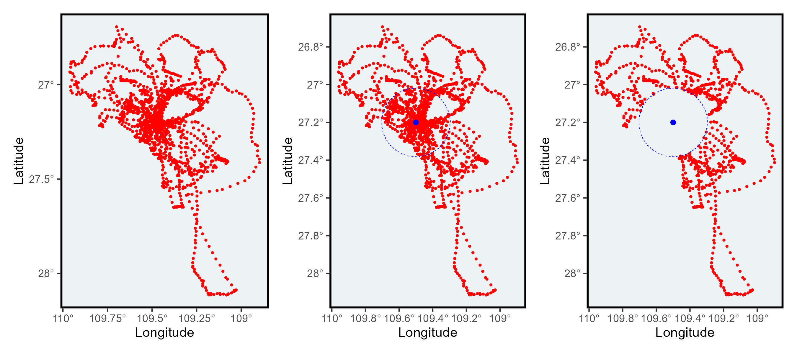

#devtools::install_github("MiriamLL/sula")
library(sula)Remove undesired locations
r
ggplot2
sula
Y2024
biologging
Create a buffer to remove locations.
Intro
When studying animals using GPSs, we often need to remove their central location. Here, I am sharing a function I created to eliminate all the locations within an area.
Data
For the exercises, test data is from masked boobies.
To access the data you have to install the package sula: devtools::install_github(“MiriamLL/sula”)
This data frame contains data from 10 individuals.
unique(sula::GPS_raw$IDs)To load it into the environment.
GPS_ten<-GPS_rawPlot your data
library(tidyverse)Here you can see all the recorded locations using the GPSs.
Original_plot<-ggplot()+
geom_point(data = GPS_ten,
aes(x=Longitude,y = Latitude),color='red', size=0.5)+
scale_x_continuous(labels = function(x) paste0(-x, '\u00B0')) +
scale_y_continuous(labels = function(x) paste0(-x, '\u00B0')) +
xlab('Longitude')+ylab('Latitude')+
theme(
panel.background = element_rect(fill = '#edf2f4'),
panel.grid.major = element_blank(),
panel.grid.minor = element_blank(),legend.position='none',
panel.border = element_rect(colour = "black", fill=NA, size=1.5)
)
Original_plotCreate a buffer
Select a location
This_point<-data.frame(Longitude=-109.5,Latitude=-27.2)Create a buffer
I created this function to create a buffer around a point
create_buffer<-function(central_point=central_point, buffer_km=buffer_km){
central_spatial<- sp::SpatialPoints(cbind(central_point$Longitude,central_point$Latitude))
sp::proj4string(central_spatial)= sp::CRS("+init=epsg:4326")
central_spatial <- sp::spTransform(central_spatial, sp::CRS("+init=epsg:4326"))
central_spatial<-sf::st_as_sf(central_spatial)
buffer_dist<-buffer_km*1000
central_buffer<-sf::st_buffer(central_spatial, buffer_dist)
return(central_buffer)
}The parameters to give are the kilometers and the central point
This_buffer<-create_buffer(central_point=This_point,buffer_km=20)class(This_buffer)Here you can see the buffer you created using the point (or central location)
Buffer_plot<-ggplot()+
geom_point(data = GPS_ten,
aes(x=Longitude,y = Latitude),color='red',size=0.5)+
geom_point(data=This_point,
aes(x=Longitude,y=Latitude),color='blue')+
geom_sf(data=This_buffer,colour='blue', fill='transparent', linetype='dashed')+
scale_x_continuous(labels = function(x) paste0(-x, '\u00B0')) +
scale_y_continuous(labels = function(x) paste0(-x, '\u00B0')) +
xlab('Longitude')+ylab('Latitude')+
theme(
panel.background = element_rect(fill = '#edf2f4'),
panel.grid.major = element_blank(),
panel.grid.minor = element_blank(),legend.position='none',
panel.border = element_rect(colour = "black", fill=NA, size=1.5)
)
Buffer_plotUsing the function from the package sp you can create an spatial object using your GPS data
GPS_sp <- GPS_ten
sp::coordinates(GPS_sp) <- ~Longitude + Latitude
sp::proj4string(GPS_sp) = sp::CRS("+init=epsg:4326")
GPS_sp<-sf::st_as_sf(GPS_sp)class(GPS_sp)
class(This_buffer)Here the function over identifies which location intersect with the buffer.
GPS_over<-sapply(sf::st_intersects(GPS_sp,This_buffer), function(z) if (length(z)==0) NA_integer_ else z[1])This information can be added as a column in the data frame.
GPS_ten$In_or_out <- as.numeric(GPS_over)To remove the locations that were within the buffer you can use the function filter and is.na from the package tidyverse
GPS_without <- GPS_ten %>%
filter(is.na(In_or_out)==TRUE)Here you can see that the locations inside the buffer were removed.
Filtered_plot<-ggplot()+
geom_point(data = GPS_without,
aes(x=Longitude,y = Latitude),color='red',size=0.5)+
geom_point(data=This_point,
aes(x=Longitude,y=Latitude),color='blue')+
geom_sf(data=This_buffer,colour='blue', fill='transparent', linetype='dashed')+
scale_x_continuous(labels = function(x) paste0(-x, '\u00B0')) +
scale_y_continuous(labels = function(x) paste0(-x, '\u00B0')) +
xlab('Longitude')+ylab('Latitude')+
theme(
panel.background = element_rect(fill = '#edf2f4'),
panel.grid.major = element_blank(),
panel.grid.minor = element_blank(),legend.position='none',
panel.border = element_rect(colour = "black", fill=NA, size=1.5)
)
Filtered_plotThis function can be used to remove all the nest locations within a distance buffer. You could also replace the polygon (here the buffer) for some land shapefiles.
Compare
Using the package patchwork we can see the difference side by side.
library(patchwork)Original_plot+Buffer_plot+Filtered_plot
Further reading
Other functions that did the job:
gBuffer from rgeos deprecated
Read more about package sf